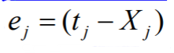

Lecture notes on Tuesday 11th September 2019
Supervised learning model: Perceptron（感知器）
Supervised vs. unsupervised Learning
Supervised Learning:
classification is seen as supervised learing from examples.
- Supervision: The data (observations, measurements, etc.) are labeled with predefined classes. It is like that a “teacher” gives the classes (supervision)
- Testing data are classified into these classes too.
Unsupervised learning (e.g. clustering)
- Class labels of the data are unknown
- Given a set of data, the task is to establish the existence of classes or clusters inthe data
Supervised learning process: two steps
- Learning (training): Learn a model using the training data
- Testing: Test the model using unseeen test data to assess the model accuracy
Accuracy = Number of correct classification / Total number of test cases
Step 1: Training
Training data → Learning algorithm → ModelStep 2: Testing
Model → Test data → Accuracy
What do we mean by learning？
Given:
1. a data set D
2. a task T
3. a performance measure M
A computer system is said to learn from D to perform the task T if after the system’s performance on T improves as measured by M.
In other words, the learned model helps the system to perform T better as compared to no learning
Fundamental assumption of learning
Assumption: The distribution of training examples is identical to the distribution of test examples (include future unseen examples).
- In practice, this assumption is often violated to certain degree.
- Strong violations will clearly result in poor classification accuracy.
- To achieve good accuracy on the test data, training examples must be sufficiently representative of the test data
Perceptron 1958
Perceptrons are neural networks that change with “experience” using error-correcting rule
According to the rule, weight of a response unit changes when it makes erroneous reponse to stimuli presented to the networks
ANN for Pattern Recognition
- Training data: set of sample pairs (x,y)
- Networks (model, classifier) adjusts its connection weights accoring to the errors between target and network output
Model
The simplest architecture of perceptron comprises two layers of idealised neurons, which we shall call “units” of the network
There are
1. one layer of input units, and
2. one layer of output units
in the perceptron
The two layers are fully interconnected, i.e., every input unit is connected to every output unit.
Thus, processing elements of the perceptron are the abstract neurons.
Each processing element has the same input comprising total input layer, but individual outputs with individual connections and therefore weights of connections.
The total input to the output unit j is
a i : input value from the ith input unit
w ji : the weight of connection btw i-th and j-th output units
The sum of taken over all n + 1 inputs units connected to the output unit j.
There is special bias input unit number 0 in the input layer. i=0
The bias unit always produces inputs a0 of the fixed values of +1.
The input a0 of bias unit functions as a constant value in the sum.
The bias unit connection to output unit j has a weight wj0 adjusted in the same way as all the other weights.
The output value Xj of the output unit j depends on whether the weighted sum is above or below the unit’s threshold value.
Xj is defined by the unit’s threshold activation function.
Xj = f(Sj) ={1, Sj>=θj; 0, j<θj}< p>
Definition
The ordered set of instant outputs of all units in the output layer X = {X0,X1…,Xn} constitues an output vector of the network
The instant output Xj of the j-th unit in the output layer constitues the j-th component of the output vector.
Weight wji of connections between the two layers are changed accoring to perceptron learning rule, so the network is more likely to produce the desired outut in response to certain inputs.
The process of weights adjustment is called perceptron learning (or training).
Perceptron Training
Every processing element computes an output according its state and threshold:
The networ instant outputs Xj are then compared to the desired outputs specified in the training set.
The error of an output unit is the difference between the target output and the instant one.

The error are computed and used to re-adjust the values of the weights of connections.
Perceptron Updating of the Weights
The goal of the training session is to arrive at a single set of weights that allow each of the mappings in the training set to be done successfully by the network.
Compute error of every output unit
where tj is the target value for output unit j
Xj is the instant output produed by output unit j
Update the weights
Wji = Wji + ∆Wji
where ∆Wji = Ce j a i = C(t j - X j)a i
Conclusion
A sequential learning procedure for updating the weights.
Perceptron training algorithm (delta rule)
∆w = learning rate x (teacher - output) x input
error
Learning rate: we set that ourselves. Set large enough that learning happens in a reasonable amount of time; and also small enough to avoid too fase.
(teacher - output): The teacher knows the correct answer.
IF we get the categorization right, (teacher - output) will be zero. In other words, if we get it right, we wonts change any of the weights. As far as we know we have a good solution, why would we change it?
Let’s think about the delta rule:
(teacher - output)
If we get the categoration wrong, it will either be -1 or +1.
For Input:
- If the node whose weight we’re adjusting sent in a 0, then it didnt participate in making the decision. In that case, it shouldn’t be adjusted. Multiplying by zero will make that happen.
- If the node whose weight we’re adjusting sent in a 1, then it did particapate and we should change the weight (up or down as needed) if the corresponding output wrong.